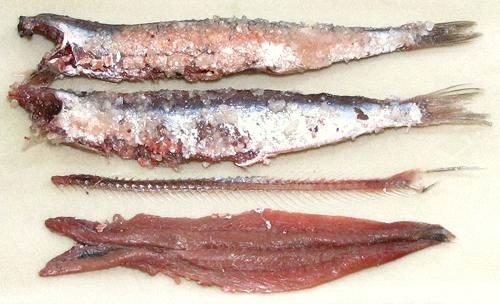

Salted Anchovies

[European Anchovy; Encrasicholina devisi]
From Roman times anchovies have been salt packed, but are not easily
available that way in North America. Many chefs insist the salt packed
are superior, with a meatier flavor and firmer texture. They are whole
headless fish just as they came from the salt cure barrels, packed in
5 inch cans with lots of coarse salt and a little brine. They need
to be de-boned, but that's easy
More on Anchovy Products
More on Fish Products
Buying:
In North America these may be carried in a
few gourmet outlets, but are most easily ordered on-line. The photo
specimens, from Italy, were purchased from JF Distribution for
2018 US $21.99 including shipping. They came in a 5 inch by 2-1/4 inch
round plastic can holding 29.9 ounces. Ingred: Anchovies, Salt, Brine.
Storing:
Keep in a cool dry place. Since I don't use
them that often, I keep them in the fridge.
Prep:
This is easy. Don't worry about fragments of
skin on the outside side, they will do no harm.
- Carefully remove Anchovy from can and wash to remove the large
salt crystals.
- Pull off the collar bones at the front of the fish, which will also
remove the pectoral fins.
- Pry the backbone loose at the very front of the fish until you can
get hold of it - then pull it towards the bottom of the fish. It will
act as a rip cord, slicing the fish open all the way to the tail.
- If you wish, you can pull the two sides of the fish away from
each other and will have the equivalent of two fillets from a can.
sf_anchsltz 180507 - www.clovegarden.com
©Andrew Grygus - agryg@clovegarden.com - Photos on this
page not otherwise credited are © cg1 -
Linking to and non-commercial use of this page permitted